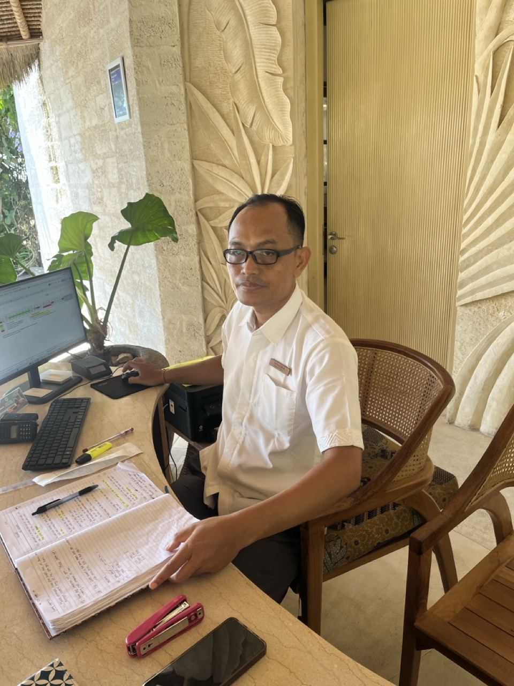

PROLOGUE The Omen
They say that omens come to those who know how to read them. The broken comb should have been warning enough. But I'm getting ahead of myself. Let me tell you about the Semaya Beach Resort, and how what began as a simple vacation on the shores of Nusa Penida became something far more sinister—a tale of tainted flesh, corrupted waters, and the kind of hospitality that would make even the dead think twice about checking in.
This is not merely a story of poor service or disappointing amenities. No, dear reader, this is something altogether more disturbing. This is the account of a place where the very essence of sustenance is perverted, where the line between nourishment and poison blurs into a nightmare of glistening, raw flesh and the grotesque theater of management's lies.
*The walls have ears, and the meat... the meat has secrets.*
CHAPTER I The Arrival
The taxi wound its way through the darkening roads of Nusa Penida, past twisted trees that seemed to reach toward us with gnarled fingers. Crystal Bay beckoned in the distance, its waters deceptively serene in the fading light. I should have known then—should have felt the wrongness in the air, thick and cloying like the scent of meat left too long in the sun.
The Semaya Beach Resort rose before us like some fever dream of tropical luxury, its facade hiding secrets that would soon crawl from the shadows like insects drawn to rotting fruit. *Something was wrong here. Something had always been wrong here.*
But the first sign of the horror to come was not in the building's bones or the staff's hollow smiles. No, it was in something as simple, as fundamental as water—the very essence of life, corrupted at its source.

They brought me containers. Not the sealed bottles one expects at a place claiming five stars, but refillable vessels of unknown origin. Who had touched them? What hands had filled them? What contamination lurked within their depths? The questions multiplied like bacteria in a petri dish, and with them came the first stirrings of dread.
One hundred and sixty thousand rupees they demanded for two bottles of water. As if the transgression of serving mystery liquid in mystery containers wasn't enough, they had the audacity to price-gouge for the privilege. When I protested, they replaced the sealed bottles with these... things. These cursed chalices that would prove to be merely the opening act in a symphony of horror.
CHAPTER II The Feast of the Damned
The dining room was elegant enough, with its soft lighting and ocean views. But elegance, I would learn, is merely a thin veneer over corruption. *The beautiful mask that hides the rotting face beneath.*
We ordered rare beef. Simple enough, one would think. Beef—that most fundamental of proteins, the cornerstone of carnivorous satisfaction. But what arrived at our table... Dear God, what arrived...

One bite. That's all it took. The flavor was wrong—fundamentally, horrifically wrong. This was not beef. This was something else entirely, something that should never have found its way onto a human plate. *Raw. Uncooked. Dangerous.*
When we summoned the restaurant manager, Andika Putra arrived with the practiced smile of a man accustomed to covering up sins. His eyes held no warmth, only the cold calculation of someone caught in a lie and determined to see it through to the bitter end.

"It is beef," he insisted, his voice carrying the weight of a dozen previous lies. "Just a bad batch." A bad batch. As if serving raw poultry or pork as beef was merely an unfortunate quality control issue, not a potential death sentence for the unwitting diner.
*But the flesh doesn't lie. The flesh remembers what it was, even when those who serve it have forgotten their humanity.*
CHAPTER III The Corruption Within
The poison began its work that very evening. One of us doubled over with cramping that felt like claws tearing at the intestinal walls. The other would suffer worse—much worse—in the days to come, as whatever parasites or bacteria lurked in that mystery flesh began their feast from within.
I sought external validation, reaching out to a professional chef, desperate to confirm what my senses already knew. The response was swift and damning: *"That is not steak."*


Even artificial intelligence, cold and logical, could see what the resort's management refused to acknowledge. The photos I shared with various online communities sparked horror and disbelief. I was actually banned from a steak forum for posting an image of what they correctly identified as non-beef—the ultimate ironic validation of our nightmare.


*In desperation, we procured anti-parasite medication, not knowing whether we were fighting chicken-borne pathogens or pork-dwelling parasites. The uncertainty was perhaps the cruelest part of all.*

CHAPTER IV The Web of Lies
On the third day, salvation seemed to arrive in the form of Sindra Sindrawan, the Operations Manager. Unlike his subordinate, Sindra looked at the photographs and immediately acknowledged the truth: this was not beef.
Hope flickered like a candle in a tomb. Here, finally, was someone willing to face reality. He promised to identify the mystery meat, to get to the bottom of this culinary nightmare. *But hope, like meat left too long in the heat, has a way of turning rancid.*
Hours later, he returned, transformed. The honest man had vanished, replaced by another puppet dancing to management's tune. Now he claimed it was beef—showed me pictures of beef packaging as if printed labels could alter the reality of what had been served.

"Let's go to the kitchen," I demanded. "Cook some up right now."
And so we went, down into the belly of the beast, where they prepared what they claimed was the same meat. But this time... this time it looked like beef. Tasted like beef. Was, undeniably, beef.

*Two different meats, two different realities. The question that haunts me still: what unholy substitution had taken place that first night?*


CHAPTER V The Waters of Corruption
If the dining room was the heart of darkness, then the bathroom was its diseased liver—filtering nothing, cleansing nothing, only adding to the overall putrefaction of the experience.
The faucet, when turned, expelled not the clear water of life, but a yellow torrent that spoke of rust, decay, and God knows what other contamination lurking in the pipes.
*Yellow like jaundice, yellow like infection, yellow like the color of fear made manifest.*
The shower offered no respite, providing only lukewarm water that lasted mere minutes before surrendering to the cold. But worst of all was the toilet's open-air design—a architectural decision that ensured every bout of food poisoning, every intestinal revolt caused by their tainted flesh, would be heard by all.

*And through those open walls, the smoke of neighboring rooms drifted in—cigarette smoke that carried with it the acrid scent of resignation and decay.*

CHAPTER VI The Instruments of Doom
Even the recreational offerings bore the mark of malevolence. The bicycles they rented were not mere transportation but death traps on wheels—ancient, decrepit machines with tires deflated like the hopes of their riders and brakes that screamed like banshees when engaged.
No lights for the dark roads, no helmets for protection—just rusted metal and false promises, designed to lure the unwary into night rides through unlit hellscapes.
The fitness facilities were equally cursed—a single machine as unstable as the management's grip on truth, accompanied by plastic dumbbells that felt like children's toys in the hands of anyone seeking genuine exercise.

CHAPTER VII The Final Omen
On the morning of departure, as if the resort needed one final opportunity to mark me with its curse, I reached for the wooden comb they had provided. *It broke in my hands.*
In Thai culture, a broken comb is an omen of the darkest sort—a harbinger of misfortune that must be immediately discarded lest its curse manifest in the physical world. Even their grooming implements were cursed.
*I disposed of the broken comb immediately, but some curses, once encountered, are impossible to fully cleanse.*
THE FINAL JUDGMENT
This is not merely a tale of poor service or substandard amenities. This is a chronicle of institutional corruption, where management Andika Putra and Sindra Sindrawan chose lies over truth, face-saving over guest safety, and corporate protection over basic human decency.
*The service staff were kind souls trapped in a machine of malevolence, but kindness cannot cleanse tainted flesh or purify yellow water.*
Do not venture to this place. Do not test its hospitality. Some resorts merely disappoint—this one consumes.